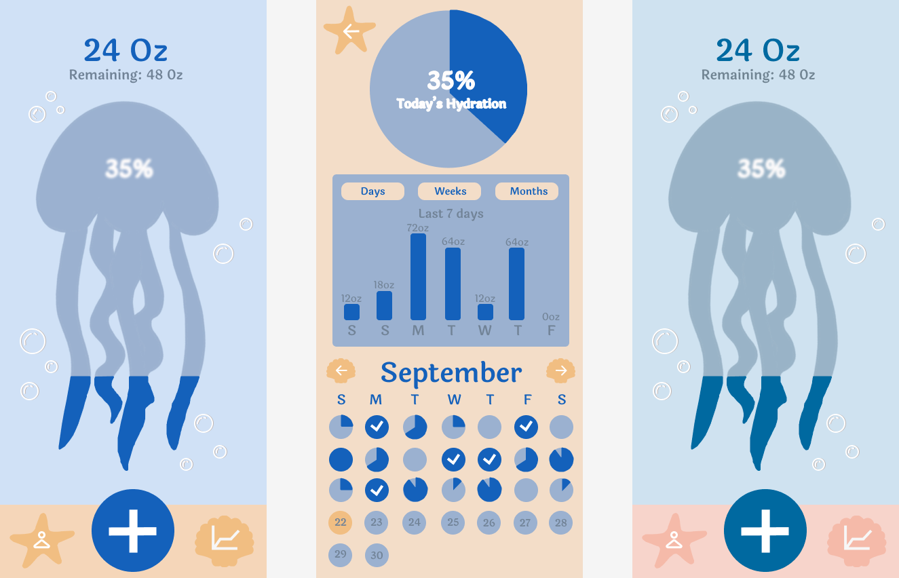
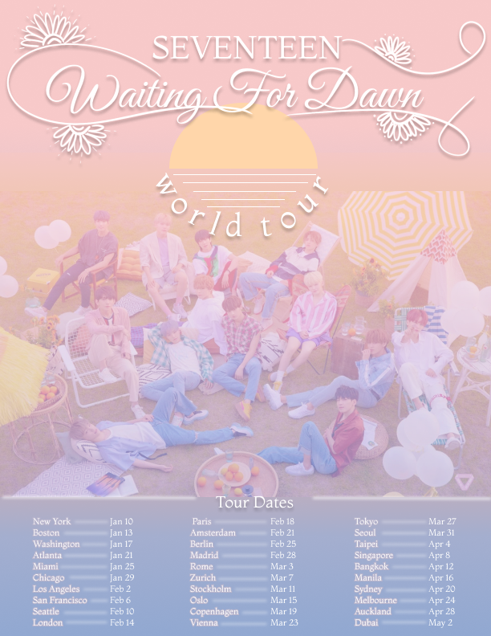

Small Projects

Water Tracking App
Created in LMC 2720: Principles of Visual Design. The project goal was to create the interface of a tracking app of our choice. This project displays my knowledge of color composition, space, and shape usage. The interface also includes a version viewed in Tritanomaly to show it is also color blind friendly.

Tour Poster
Created in LMC 2720: Principles of Visual Design. In this project I was tasked to create a concert poster that is able to visually display the type of music given by the artists through typography and design. Here, I display my understanding of typography, hierarchy, and color.